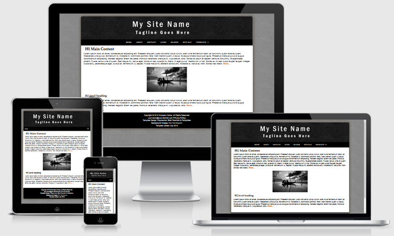

Winter Mobile Friendly Template
[../ff-dwt-include.html]


The Winter Template is based on one of the newest templates offered on our sister site - Expression Web Mobile Friendly Site Templates. This template uses some CSS3 for the rounded corners and drop shadows. The rounded corners will display as intended in newer modern browsers. They will degrade gracefully in older browsers and default to rectangular corners. This template uses a liquid width with a maximum width of 1500px. You may remove this if you choose. The layout and is mobile friendly and passes Google's mobile-friendly test.
The download is available as a personal web package which includes a dynamic web template and all supporting files for a small site for use with Expression Web.
Images:

The page background as well as the masthead background are from eos developers. The site name is a transparent graphic image and inserted directly into the html code with the class scalable applied. This will allow your image to scale to fit all device displays. You can substitute your own image for the masthead but you will need to make sure the image is wide enough to fill the space.
Class style rules are included to float your images right or left or center them on the page as well as scaling them so they display in all devices.
Menus
The top menu on this template allows for 2 sub menu dropdowns and is from CSS Menu Maker. The last menu item Products does not link to any page but shows you how the dropdown works.
Search Box
The Google Custom search box will need to be adjusted with the code for YOUR custom search. You can, of course, use any search engine you choose. The styling for the search areas is part of the external style sheet.
CSS and Script Links
Besides the main style sheet (site.css), there is a special style sheet (media-queries) which allows the inclusion of special CSS rules to optimize your page for mobile browsers.
Additional Resources
You can find detailed instructions for working with the mobile friendly site templates as well as a pdf file you can download and print.
Gotcha's
You will need to preview your page within a browser as Design View will NOT display the page as it should look.